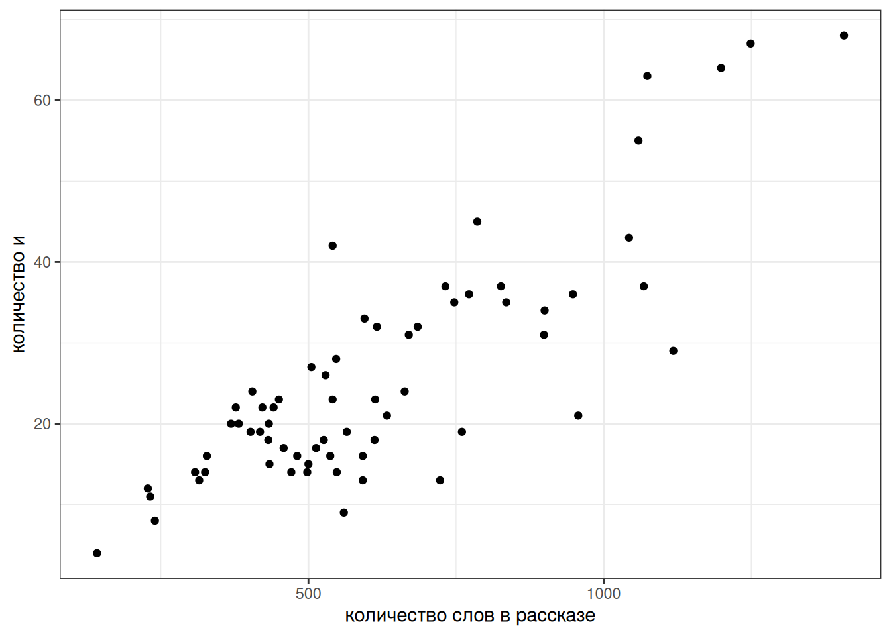

library(tidyverse)8 Основы статистического анализа
8.1 О статистике
Статистика имеет большое значение в науке, и все чаще, она позволяет принимать решения правительствам, корпорациям и т. п. В области принятия решений статистику сейчас теснят методы машинного обучения, однако в науке все же статистика продолжает занимать важное место, помогая подтвердить обнаруженные факты, делать решения на основе данных и делать предсказания.
Важно подчеркнуть разницу между статистикой и машинным обучением: она заключается в основных целях. Статистика в основном занимается выводами и моделированием процессов, которые генерируют наблюдаемые данные, в то время как машинное обучение фокусируется на поиске обобщаемых предиктивных закономерностей в данных. Несмотря на то, что некоторые методы используются как в статистике, так и в машинном обучении, все же эти две области имеют разные цели и подходы.
Важно помнить, что статистика позволяет лишь моделировать процессы, которые стоят за генерацией данных. В связи с этим не стоит считать, что статистический вывод позволяет узнать правду или сделать правильный выбор: правильность и истинность любого конкретного случая зависит от научных установок исследователя, ответственного применения методов с соблюдением всех ограничений на их применение, качества сбора данных и теоретического обоснования процедуры анализа. Я призываю смотреть на статистику как на инструмент, который помогает в принятии решений, предсказании и моделировании: если вы забили шуруп молотком, то, вероятно, вашу задачу вы решили, но молоток сам по себе не несет ответственности за результат.
Сейчас широко распространены две школы статистического анализа: фриквентисткий (еще можно встретить термин частотный) и байесовский. Разница между этими подходами заключается в их основных принципах. Частотный подход основан на оценке статистического параметра на основе частоты его появления в выборке, в то время как байесовский подход позволяет представить оценку статистического параметра как распределение вероятностей, соединяя априорные знания о предметной области и новые данные. Фриквентистские методы получили широкое распространение в XX веке, а байесовская методы применялись задолго до фриквентистских, однако с развитием вычислительных мощностей в XXI веке популярность байесовских методов растет. В данном главе мы будем опираться на фриквентистские методы, так как погружение в байесовские методы требует некоторой значительной подготовки.
8.2 Тест Стьюдента (t-тест)
Первый статистический метод, который обычно обсуждают в фриквентистской статистике — это тест Стьюдента. Основное его применение заключается в сравнении средних значений двух групп (двухвыборочный тест) или среднего одной группы с некоторым значением (одновыборочный тест). Среди возможных задач, которые можно решить при помощи теста Стьюдента:
- оценить эффект нового лекарства по сравнению со старым;
- оценить эффект нового метода обучения на результатах тестов групп студентов;
- оценить отличие какого-нибудь параметра популяции (например, избыточного веса) по сравнению с нормой.
Теперь мы обсудим стандартную процедуру фриквентистской статистики. Допустим мы сравниваем средние двух групп А и B. Принято создавать две гипотезы:
- \(H_0\) — (нулевая гипотеза) разница между группами не является статистически значимой, т. е. наблюдаемые данные могут происходят из одного ожидаемого распределения.
- \(H_1\) — (альтернативная гипотеза) разница является статистически значимой, т. е. наблюдаемые данные не могут происходят из одного ожидаемого распределения.
Нулевая гипотеза — это гипотеза, которую каждый исследователь в случае успеха отвергнет, и примет альтернативную. После применения статистического критерия (каждый критерий зависит от конкретного статистического теста, а выбор теста зависит от типа данных) исследователь считает вероятность наблюдать такой или более экстремальный результат, если верна нулевая гипотеза (p-value, p-уровень значимости).
В тесте Стьюдента таким распределением является t-распредление. Распределение, которое напоминает нормальное распределение, но имеет более широкие края:
T-распределение имеет один параметр, который принято называть степенями свободы (degree of freedom, df). Чем больше сетпеней свободы, тем больше t-распределение похоже на нормальное распределение. Обычно этот параметр напрямую связывают с количеством наблюдений.
tibble(x = rep(seq(-7, 7, by = 0.01), 4),
df = rep(c(5, 15, 30, 75), 1401),
y = dt(x, df =df)) |>
ggplot(aes(x, y, color = as.factor(df)))+
geom_line()Давайте разберем на примере. Из статьи (Stepanova 2011) мы знаем, что носители русского языка в среднем говорят 5.31 слога в секунду со стандартным отклонением 1,93 (мужчины 5.46 слога в секунду со средним отклонением 2.02, женщины 5.23 слога в секунду со средним отклонением 1.84, дети 3.86 слога в секунду со средним отклонением 1.67). Мы опросили 30 носителей деревни N и выяснили, что средняя равна 7, а стандартное отклонение равно 2. Является ли данная разница статистически значимой? Рассмотрим данные
set.seed(42)
data <- rnorm(n = 30, mean = 7, sd = 2)
data [1] 9.741917 5.870604 7.726257 8.265725 7.808537 6.787751 10.023044
[8] 6.810682 11.036847 6.874572 9.609739 11.573291 4.222279 6.442422
[15] 6.733357 8.271901 6.431494 1.687089 2.119066 9.640227 6.386723
[22] 3.437383 6.656165 9.429349 10.790387 6.139062 6.485461 3.473674
[29] 7.920195 5.720010Вот так можно визуализировать наш вопрос:
tibble(data) |>
ggplot(aes(data))+
geom_dotplot()+
geom_vline(xintercept = mean(data), size = 2, linetype = 2)+
geom_vline(xintercept = 5.31, size = 2, linetype = 2, color = "red")+
annotate(geom = "text", x = 3, color = "red", y = 0.75, label = "среднее согласно\n[Stepanova 2011]", size = 5)Применяем тест Стьюдента. Так как мы сравниваем нашу выборку с некоторым эталонным значением, мы применяем одновыборочный тест Стьюдента, а эталонное значение записываем в аргумент mu:
t.test(data, mu = 5.31)
One Sample t-test
data: data
t = 3.9871, df = 29, p-value = 0.0004143
alternative hypothesis: true mean is not equal to 5.31
95 percent confidence interval:
6.199903 8.074444
sample estimates:
mean of x
7.137174 Если мы хотим визуализировать t-статистику, которую мы получили на t-распределении, получится вот такой график:
tibble(x = seq(-7, 7, by = 0.01),
y = dt(x, df = 29)) |>
ggplot(aes(x, y))+
geom_line()+
geom_vline(linetype = 2, xintercept = 3.9871)+
labs(title = "t-распределение с параметром df = 29")Если бы значение t-критерия оказалось где-то посередине, то тест Стьюдента бы выдал p-value больше 0.05 и тогда у нас бы не было оснований ни для отвержения, ни для принятия нулевой гипотезы.
8.2.1 Двухвыборочный тест Стьюдента
Логика двухвыборочного теста идентична логике одновыброчного, с тем лишь исключением, что мы сравниваем две группы:

Welch Two Sample t-test
data: sample_1 and sample_2
t = -5.0632, df = 41.295, p-value = 9.005e-06
alternative hypothesis: true difference in means is not equal to 0
95 percent confidence interval:
-11.046695 -4.748026
sample estimates:
mean of x mean of y
40.93768 48.83504 На практике разница видна только в названии аргументов. Представим, что у нас есть две выборки:
sample_1 [1] 46.85479 37.17651 41.81564 43.16431 42.02134 39.46938 47.55761 39.52670
[9] 50.09212 39.68643 46.52435 51.43323 33.05570 38.60606 39.33339 43.17975
[17] 38.57874 26.71772 27.79767 46.60057 38.46681 31.09346 39.14041 46.07337
[25] 49.47597sample_2 [1] 48.06289 48.84229 42.06577 52.07044 47.12002 52.04953 53.17177 54.65797
[9] 47.25983 52.27230 42.27346 46.46993 46.17092 39.13607 50.16255 50.92699
[17] 48.37524 53.41173 46.72983 43.84274 51.94768 46.34873 56.49846 48.05849
[25] 52.95042Тогда для того, чтобы применит тест Стьюдента, нужно запустить следующий код:
t.test(sample_1, sample_2)
Welch Two Sample t-test
data: sample_1 and sample_2
t = -5.0632, df = 41.295, p-value = 9.005e-06
alternative hypothesis: true difference in means is not equal to 0
95 percent confidence interval:
-11.046695 -4.748026
sample estimates:
mean of x mean of y
40.93768 48.83504 8.3 Регрессионный анализ
8.3.1 Основы
Суть регрессионного анализа в моделировании связи между двумя и более переменными при помощи прямой на плоскости. Формула прямой зависит от двух параметров: свободного члена (intercept) и углового коэффициента (slope).
Когда мы пытаемся научиться предсказывать данные одной переменной \(Y\) при помощи другой переменной \(X\), мы получаем похожую формулу:
\[y_i = \hat\beta_0 + \hat\beta_1 \times x_i + \epsilon_i,\] где
- \(x_i\) — \(i\)-ый элемент вектора значений \(X\);
- \(y_i\) — \(i\)-ый элемент вектора значений \(Y\);
- \(\hat\beta_0\) — оценка случайного члена (intercept);
- \(\hat\beta_1\) — оценка углового коэффициента (slope);
- \(\epsilon_i\) — \(i\)-ый остаток, разница между оценкой модели (\(\hat\beta_0 + \hat\beta_1 \times x_i\)) и реальным значением \(y_i\); весь вектор остатков иногда называют случайным шумом (на графике выделены красным).
Задача регрессии — оценить параметры \(\hat\beta_0\) и \(\hat\beta_1\), если нам известны все значения \(x_i\) и \(y_i\) и мы пытаемся минимизировать значния \(\epsilon_i\). В данном конкретном случае, задачу можно решить аналитически и получить следующие формулы:
\[\hat\beta_1 = \frac{(\sum_{i=1}^n x_i\times y_i)-n\times\bar x \times \bar y}{\sum_{i = 1}^n(x_i-\bar x)^2}\]
\[\hat\beta_0 = \bar y - \hat\beta_1\times\bar x\]
8.3.2 Первая регрессия
Давайте попробуем смоделировать количество слов и в рассказах М. Зощенко в зависимости от длины рассказа:
zoshenko <- read_csv("https://raw.githubusercontent.com/agricolamz/daR4hs/main/data/w8_tidy_zoshenko.csv")
zoshenko |>
filter(word == "и") |>
distinct() ->
zoshenko_filtered
zoshenko_filtered |>
ggplot(aes(n_words, n))+
geom_point()+
labs(x = "количество слов в рассказе",
y = "количество и")
Давайте избавимся от них и добавим регрессионную линию при помощи функции geom_smooth():
zoshenko_filtered |>
ggplot(aes(n_words, n))+
geom_point()+
geom_smooth(method = "lm", se = FALSE)+
labs(x = "количество слов в рассказе",
y = "количество и")Чтобы получить формулу этой линии нужно запустить функцию, которая оценивает линейную регрессию:
fit <- lm(n~n_words, data = zoshenko_filtered)
fit
Call:
lm(formula = n ~ n_words, data = zoshenko_filtered)
Coefficients:
(Intercept) n_words
-1.47184 0.04405 Вот мы и получили коэффициенты, теперь мы видим, что наша модель считает следующее:
\[n = -1.47184 + 0.04405 \times n\_words\]
Более подробную информцию можно посмотреть, если запустить модель в функцию summary():
summary(fit)
Call:
lm(formula = n ~ n_words, data = zoshenko_filtered)
Residuals:
Min 1Q Median 3Q Max
-19.6830 -4.3835 0.8986 4.6486 19.6413
Coefficients:
Estimate Std. Error t value Pr(>|t|)
(Intercept) -1.471840 2.467149 -0.597 0.553
n_words 0.044049 0.003666 12.015 <2e-16 ***
---
Signif. codes: 0 '***' 0.001 '**' 0.01 '*' 0.05 '.' 0.1 ' ' 1
Residual standard error: 7.945 on 64 degrees of freedom
Multiple R-squared: 0.6928, Adjusted R-squared: 0.688
F-statistic: 144.4 on 1 and 64 DF, p-value: < 2.2e-16В разделе Coefficients содержится информацию про наши коэффициенты:
Estimate– полученная оценка коэффициентов;Std. Error– стандартная ошибка среднего;t value– \(t\)-статистика, полученная при проведении одновыборочного \(t\)-теста, сравнивающего данный коэфициент с 0;Pr(>|t|)– полученное \(p\)-значение;Multiple R-squaredиAdjusted R-squared— одна из оценок модели, показывает связь между переменными. Без поправок совпадает с квадратом коэффициента корреляции Пирсона.F-statistic— \(F\)-статистика полученная при проведении теста, проверяющего, не являются ли хотя бы один из коэффицинтов статистически значимо отличается от нуля. Совпадает с результатами дисперсионного анализа (ANOVA).
Теперь мы можем даже предсказывать значения, которые мы еще не видели. Например, сколько будет и в рассказе Зощенко длиной 1000 слов?
predict(fit, tibble(n_words = 1000)) 1
42.57715 8.3.3 Категориальные переменные
Что если мы хотим включить в наш анализ категориальные переменные? Давайте рассмотрим простой пример с рассказами Чехова и Зощенко, которые мы рассматривали в прошлом разделе. Мы будем анализировать логарифм доли слов деньги:
chekhov <- read_csv("https://raw.githubusercontent.com/agricolamz/daR4hs/main/data/w8_tidy_chekhov.csv")
zoshenko <- read_csv("https://raw.githubusercontent.com/agricolamz/daR4hs/main/data/w8_tidy_zoshenko.csv")
chekhov |>
bind_rows(zoshenko) |>
filter(str_detect(word, "деньг")) |>
group_by(author, titles, n_words) |>
summarise(n = sum(n)) |>
mutate(log_ratio = log(n/n_words)) ->
checkov_zoshenkoВизуализация выглядит так:
Красной точкой обозначены средние значения, так что мы видим, что между двумя писателями есть разница, но является ли она статистически значимой? В прошлом разделе, мы рассмотрели, что в таком случае можно сделать t-test:
t.test(log_ratio~author,
data = checkov_zoshenko,
var.equal = TRUE) # здесь я мухлюю, отключая поправку Уэлча
Two Sample t-test
data: log_ratio by author
t = 6.3897, df = 124, p-value = 3.045e-09
alternative hypothesis: true difference in means between group Зощенко and group Чехов is not equal to 0
95 percent confidence interval:
1.009976 1.916472
sample estimates:
mean in group Зощенко mean in group Чехов
-4.878002 -6.341226 Разница между группами является статистически значимой (t(125) = 5.6871, p-value = 8.665e-08).
Для того, чтобы запустить регрессию на категориальных данных категориальная переменная автоматически разбивается на группу бинарных dummy-переменных:
tibble(author = c("Чехов", "Зощенко"),
dummy_chekhov = c(1, 0),
dummy_zoshenko = c(0, 1))# A tibble: 2 × 3
author dummy_chekhov dummy_zoshenko
<chr> <dbl> <dbl>
1 Чехов 1 0
2 Зощенко 0 1Дальше для регрессионного анализа выкидывают одну из переменных, так как иначе модель не сойдется (dummy-переменных всегда n-1, где n — количество категорий в переменной).
tibble(author = c("Чехов", "Зощенко"),
dummy_chekhov = c(1, 0))# A tibble: 2 × 2
author dummy_chekhov
<chr> <dbl>
1 Чехов 1
2 Зощенко 0Если переменная dummy_chekhov принимает значение 1, значит речь о рассказе Чехова, а если принимает значение 0, то о рассказе Зощенко. Если вставить нашу переменную в регрессионную формулу получится следующее:
\[y_i = \hat\beta_0 + \hat\beta_1 \times \text{dummy\_chekhov} + \epsilon_i\]
Так как dummy_chekhov принимает либо значение 1, либо значение 0, то получается, что модель предсказывает лишь два значения:
\[y_i = \left\{\begin{array}{ll}\hat\beta_0 + \hat\beta_1 \times 1 + \epsilon_i = \hat\beta_0 + \hat\beta_1 + \epsilon_i\text{, если рассказ Чехова}\\ \hat\beta_0 + \hat\beta_1 \times 0 + \epsilon_i = \hat\beta_0 + \epsilon_i\text{, если рассказ Зощенко} \end{array}\right.\]
Таким образом, получается, что свободный член \(\beta_0\) и угловой коэффициент \(\beta_1\) в регресси с категориальной переменной получает другую интерпретацию. Одно из значений переменной кодируется при помощи \(\beta_0\), а сумма коэффициентов \(\beta_0+\beta_1\) дают другое значение переменной. Так что \(\beta_1\) — это разница между оценками двух значений переменной.
Давайте теперь запустим регрессию на этих же данных:
fit2 <- lm(log_ratio~author, data = checkov_zoshenko)
summary(fit2)
Call:
lm(formula = log_ratio ~ author, data = checkov_zoshenko)
Residuals:
Min 1Q Median 3Q Max
-2.24643 -0.61293 -0.05149 0.65130 3.09655
Coefficients:
Estimate Std. Error t value Pr(>|t|)
(Intercept) -4.878 0.210 -23.22 < 2e-16 ***
authorЧехов -1.463 0.229 -6.39 3.05e-09 ***
---
Signif. codes: 0 '***' 0.001 '**' 0.01 '*' 0.05 '.' 0.1 ' ' 1
Residual standard error: 0.9393 on 124 degrees of freedom
Multiple R-squared: 0.2477, Adjusted R-squared: 0.2416
F-statistic: 40.83 on 1 and 124 DF, p-value: 3.045e-09Во-первых стоит обратить внимание на то, что R сам преобразовал нашу категориальную переменную в dummy-переменную authorЧехов. Во-вторых, можно заметить, что значения t-статистики и p-value совпадают с результатами полученными нами в t-тесте выше. Статистическти значимый коэффициент при аргументе authorЧехов следует интерпретировать как разницу средних между логарифмом долей в рассказах Чехова и Зощенко.
8.3.4 Множественная регрессия
Множественная регрессия позволяет проанализировать связь между зависимой и несколькими зависимыми переменными. Формула множественной регрессии не сильно отличается от формулы обычной линейной регрессии:
\[y_i = \hat\beta_0 + \hat\beta_1 \times x_{1i}+ \dots+ \hat\beta_n \times x_{ni} + \epsilon_i,\]
- \(x_{ki}\) — \(i\)-ый элемент векторов значений \(X_1, \dots, X_n\);
- \(y_i\) — \(i\)-ый элемент вектора значений \(Y\);
- \(\hat\beta_0\) — оценка случайного члена (intercept);
- \(\hat\beta_k\) — коэфциент при переменной \(X_{k}\);
- \(\epsilon_i\) — \(i\)-ый остаток, разница между оценкой модели (\(\hat\beta_0 + \hat\beta_1 \times x_i\)) и реальным значением \(y_i\); весь вектор остатков иногда называют случайным шумом.
В такой регресии предикторы могут быть как числовыми, так и категориальными (со всеми вытекающими последствиями, которые мы обсудили в предудщем разделе). Такую регрессию чаще всего сложно визуализировать, так как в одну регрессионную линию вкладываются сразу несколько переменных.
Попробуем предсказать длину лепестка на основе длины чашелистик и вида ириса:
iris |>
ggplot(aes(Sepal.Length, Petal.Length, color = Species))+
geom_point()Запустим регрессию:
fit3 <- lm(Petal.Length ~ Sepal.Length + Species, data = iris)
summary(fit3)
Call:
lm(formula = Petal.Length ~ Sepal.Length + Species, data = iris)
Residuals:
Min 1Q Median 3Q Max
-0.76390 -0.17875 0.00716 0.17461 0.79954
Coefficients:
Estimate Std. Error t value Pr(>|t|)
(Intercept) -1.70234 0.23013 -7.397 1.01e-11 ***
Sepal.Length 0.63211 0.04527 13.962 < 2e-16 ***
Speciesversicolor 2.21014 0.07047 31.362 < 2e-16 ***
Speciesvirginica 3.09000 0.09123 33.870 < 2e-16 ***
---
Signif. codes: 0 '***' 0.001 '**' 0.01 '*' 0.05 '.' 0.1 ' ' 1
Residual standard error: 0.2826 on 146 degrees of freedom
Multiple R-squared: 0.9749, Adjusted R-squared: 0.9744
F-statistic: 1890 on 3 and 146 DF, p-value: < 2.2e-16Все предикторы статистически значимы. Давайте посмотрим предсказания модели для всех наблюдений:
iris |>
mutate(prediction = predict(fit3)) |>
ggplot(aes(Sepal.Length, prediction, color = Species))+
geom_point()
Всегда имеет смысл визуализировать, что нам говорит наша модель. Если использовать пакет ggeffects (или предшествовавший ему пакет effects), это можно сделать не сильно задумываясь, как это делать:
library(ggeffects)
plot(ggpredict(fit3, terms = c("Sepal.Length", "Species")))Как видно из графиков, наша модель имеет одинаковые угловые коэффициенты (slope) для каждого из видов ириса и разные свободные члены (intercept).
summary(fit3)
Call:
lm(formula = Petal.Length ~ Sepal.Length + Species, data = iris)
Residuals:
Min 1Q Median 3Q Max
-0.76390 -0.17875 0.00716 0.17461 0.79954
Coefficients:
Estimate Std. Error t value Pr(>|t|)
(Intercept) -1.70234 0.23013 -7.397 1.01e-11 ***
Sepal.Length 0.63211 0.04527 13.962 < 2e-16 ***
Speciesversicolor 2.21014 0.07047 31.362 < 2e-16 ***
Speciesvirginica 3.09000 0.09123 33.870 < 2e-16 ***
---
Signif. codes: 0 '***' 0.001 '**' 0.01 '*' 0.05 '.' 0.1 ' ' 1
Residual standard error: 0.2826 on 146 degrees of freedom
Multiple R-squared: 0.9749, Adjusted R-squared: 0.9744
F-statistic: 1890 on 3 and 146 DF, p-value: < 2.2e-16\[y_i = \left\{\begin{array}{ll} -1.70234 + 0.63211 \times \text{Sepal.Length} + \epsilon_i\text{, если вид setosa}\\ -1.70234 + 2.2101 + 0.63211 \times \text{Sepal.Length} + \epsilon_i\text{, если вид versicolor} \\ -1.70234 + 3.09 + 0.63211 \times \text{Sepal.Length} + \epsilon_i\text{, если вид virginica} \end{array}\right.\]
8.3.5 Сравнение моделей
Как нам решить, какая модель лучше? Ведь теперь можно добавить сколько угодно предикторов? Давайте создадим новую модель без предиктора Species:
fit4 <- lm(Petal.Length ~ Sepal.Length, data = iris)- можно сравнивать статистическую значимость предикторов
- можно сравнивать \(R^2\)
summary(fit3)$adj.r.squared[1] 0.9743786summary(fit4)$adj.r.squared[1] 0.7583327- чаще всего используют так называемые информационные критерии, самый популярный – AIC (Akaike information criterion). Сами по себе значение этого критерия не имеет значения – только в сравнении моделей, построенных на похожих данных. Чем меньше значение, тем модель лучше.
AIC(fit3, fit4) df AIC
fit3 5 52.47418
fit4 3 387.135008.3.6 Послесловие
- сущетсвуют ограничения на применение линейной регресии
- связь между предсказываемой переменной и предикторами должна быть линейной
- остатки должны быть нормально распределены (оценивайте визуально)
- дисперсия остатков вокруг регрессионной линии должно быть постоянно (гомоскидастично)
- предикторы не должны коррелировать друг с другом
- все наблюдения в регрессии должны быть независимы друг от друга
Вот так вот выглядят остатки нашей модели на основе датасета iris. Смотрите пост, в котором обсуждается, как интерпретировать график остатков.
plot(fit3, which=c(1, 2))- сущетсвуют трюки, позволяющие автоматически отбирать модели (см. функцию
step()) - существует достаточно большое семейство регрессий, который зависят от типа независимой (предсказываемой) переменной или ее распределения
- логистическая (если предсказываемая переменная имеет два возможных исхода)
- мультиномиальная (если предсказываемая переменная имеет больше двух возможных дискретных исхода)
- нелиненые регресии (если связь между переменными нелинейна)
- регрессия со смешанными эффектами (если внутри данных есть группировки, т. е. наблюдения не независимы)
- и другие.